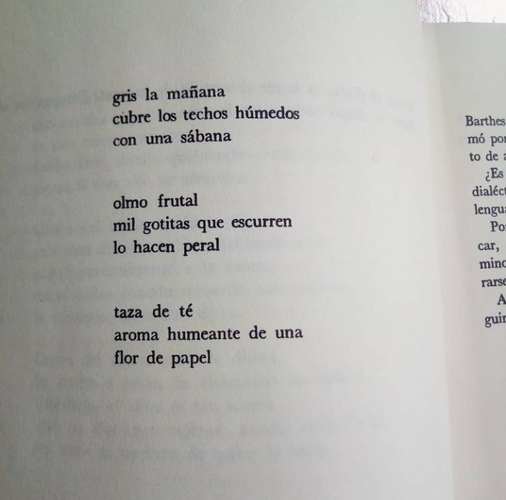
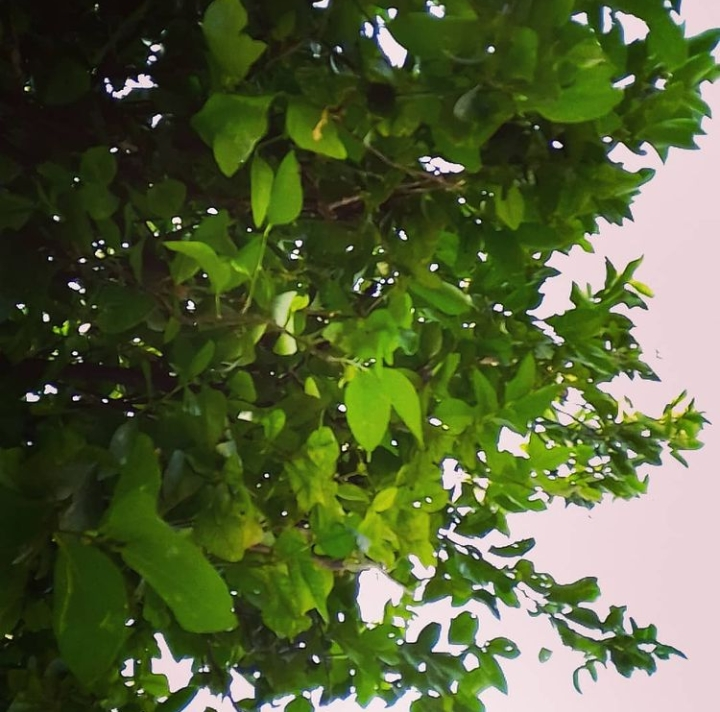
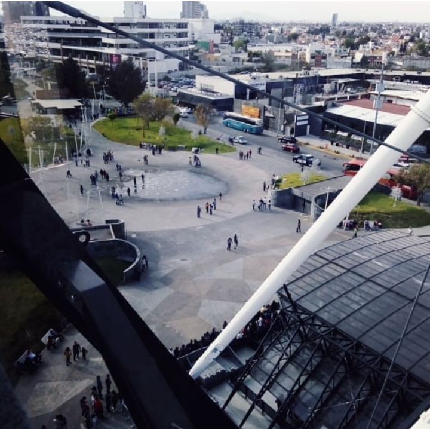
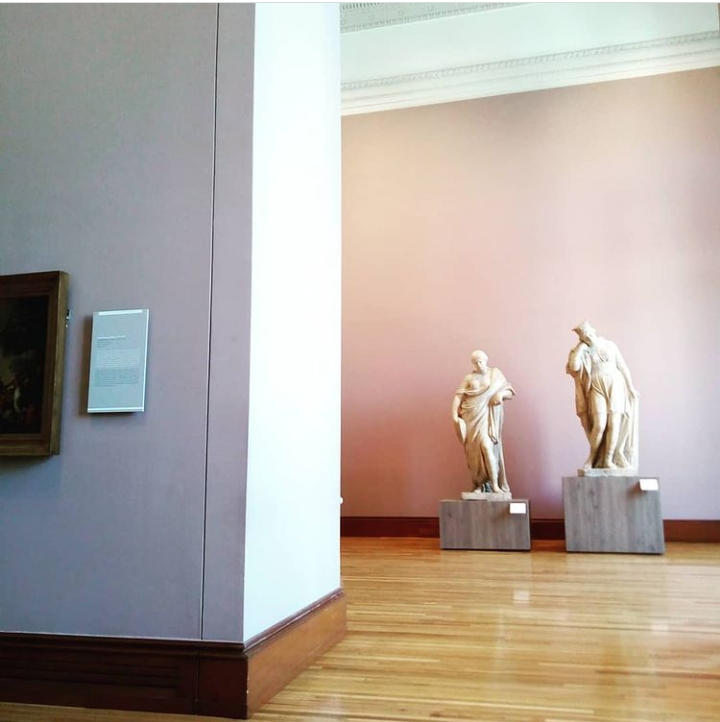
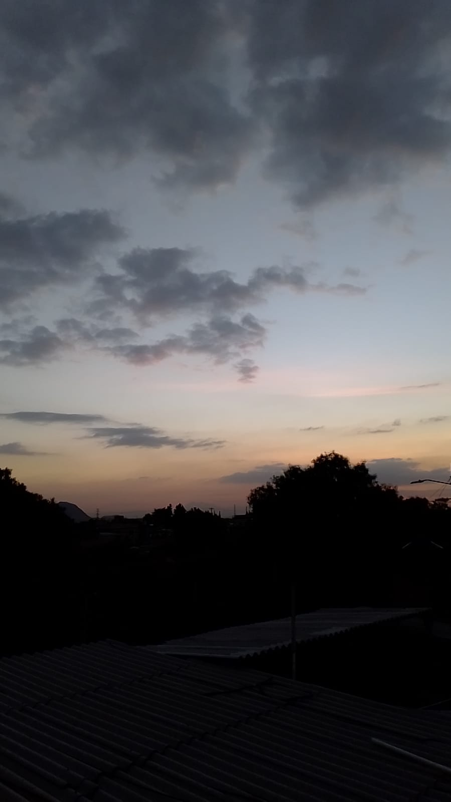
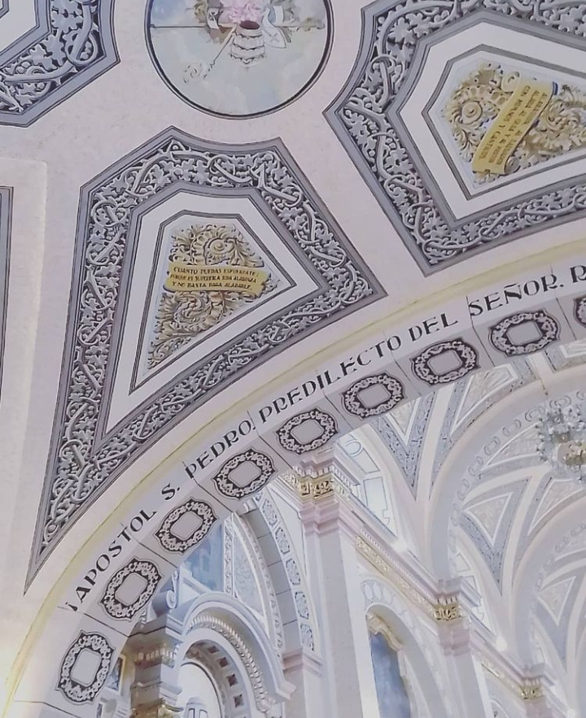

Un cachito de mí
Me encanta la poesía

Adoro observar la naturaleza y conectar con ella

(También con las personas)

Disfruto mucho de los museos.

Me fascina tomar fotografías del cielo,

pero también de lo cotidiano.
Y siempre siempre, miro los techos XD jaja

...pero una vez me dijeron que lxs grandes eran/son así, miran hacia arriba.
P.D: Soy team minimalista